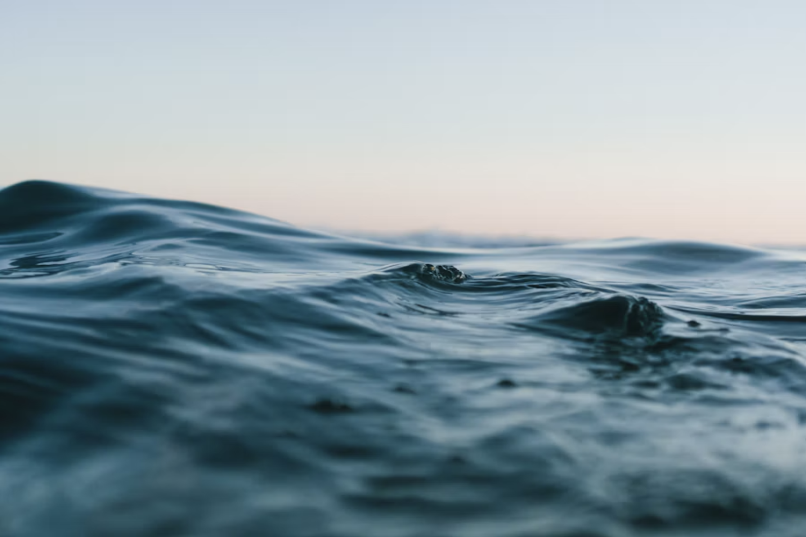
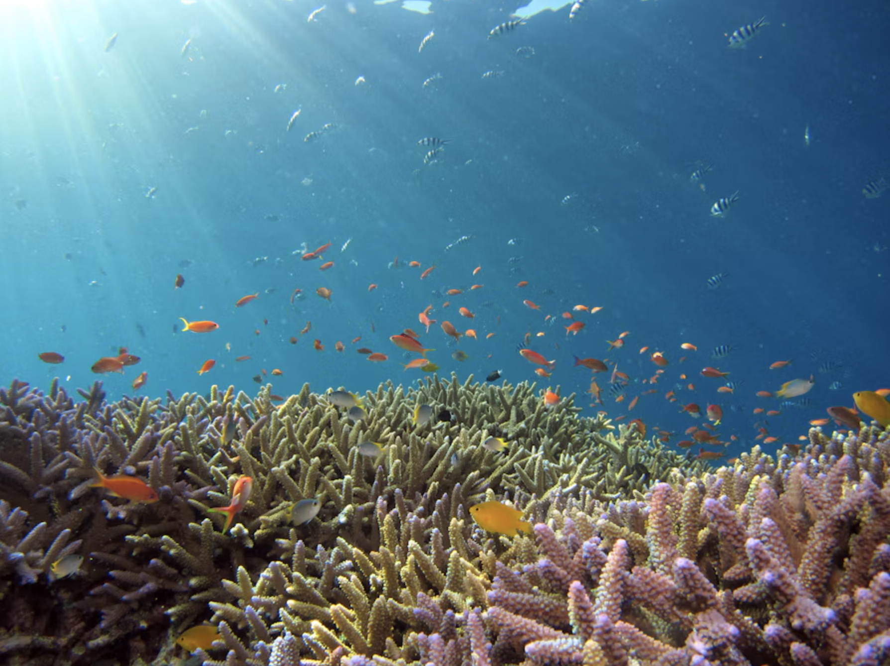

Una nueva forma de cuidar el agua
Nuestro proyecto busca desarrollar una alternativa innovadora para el cuidado de los cuerpos de agua mediante un filtro elaborado con cabello reciclado. Aprovechamos un material que normalmente se desecha para darle una nueva función dentro de un sistema de filtración.
Conoce nuestro proyectoDel cabello al cuidado del agua

El proyecto consiste en recolectar cabello que normalmente sería desechado y utilizarlo como parte de un sistema de filtración. La idea es investigar sus propiedades y comprobar mediante pruebas qué contaminantes puede ayudar a retener.
¿Qué hacemos y por qué?
Creamos y estudiamos un filtro de cabello porque la contaminación de los cuerpos de agua afecta a los ecosistemas, las especies y las comunidades que dependen de ellos.
Objetivos principales
Reutilizar cabello que terminaría como residuo, desarrollar un prototipo de filtro, promover la economía circular y vincular el proyecto con el ODS 14: Vida Submarina.
¿Cómo elaboramos nuestro filtro?
Selecciona una fase para ver los pasos de elaboración:
Recolección y limpieza: Se recolecta cabello limpio proveniente de salones de belleza o barberías. Después se lava cuidadosamente para eliminar suciedad, aceites, productos cosméticos y otros residuos que puedan afectar el experimento.
Secado y preparación: Después de limpiarlo, el cabello se deja secar completamente. Luego se organiza y compacta para formar una capa filtrante dentro de una malla o estructura que permita el paso del agua.
Estructura, instalación y análisis: Se coloca en un recipiente que mantenga el cabello en su lugar sin dispersarse, se instala en el sistema de prueba, se hace pasar el agua y se comparan los resultados antes y después.
Funcionamiento y cuerpos de agua
El cabello contiene queratina y presenta características que permiten investigar su interacción con determinadas sustancias. Está pensado para estudiarse en ríos, lagos, lagunas, canales, estanques y humedales, considerando siempre las condiciones de cada lugar.
Prueba el funcionamiento del filtro:
ODS 14: Vida Submarina e Investigación

El ODS 14 busca conservar los océanos, mares y recursos marinos, con la meta de prevenir y reducir la contaminación marina producida en tierra. Nuestro proyecto aporta reutilización, cuidado del agua, conciencia ambiental, innovación y economía circular.
Proceso de investigación: Preparamos una muestra de agua conocida, medimos sus condiciones iniciales, la pasamos por el filtro, analizamos el agua filtrada, comparamos el antes y después y registramos los resultados con fotografías, tablas y gráficas.
Conoce nuestra empresa
Misión y Visión
Desarrollar una alternativa innovadora y sostenible para el cuidado de los cuerpos de agua mediante la reutilización del cabello, promoviendo la protección de los ecosistemas acuáticos.
Valores
Responsabilidad ambiental, innovación, investigación, sostenibilidad, reutilización y compromiso con los ecosistemas.
Integrantes: Maytte Palomares Miranda, N.L. 22 (Gerente General y Producción/Operación); Mia Samantha Cotarelo Martínez, N.L. 6 (Ventas y Marketing); Zahara Camila Miravette Ocampo, N.L. 18 (Finanzas y Contabilidad).